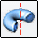
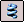

Construct a base feature
The first solid you construct in a Solid Edge Part document is called a base feature. To construct a base feature in a new document:
-
Synchronous Part environment—Sketch a profile, then extrude it either using the Select tool or the Extrude command.
-
Ordered Part environment—Use the Extrude command, which is active by default.
You can use any of the following commands in the Solids group to construct a base feature.
|
|
Extrude |
|
 |
Revolved Protrusion |
|
|
Swept Protrusion |
|
|
Lofted Protrusion |
|
 |
Helical Protrusion |
|
|
Web Network |
You construct a base feature by drawing a new profile on a reference plane or by selecting 2D geometry from an existing sketch. The profile for a base feature must be closed.
To learn more about how to construct one of these types of features, click one of the following topics:
-
You can create 2D Sketches, construction geometry and 3-dimensional construction surfaces to aid in constructing the base feature.
-
You must construct a base feature before you can construct a treatment feature or a feature that removes material from the solid.
-
You can also construct a base feature by importing data.
-
You can construct surface features before or after you construct a base feature.
-
To make a solid from construction surfaces, you must stitch them together to create a closed volume. You can then run the Make Base Feature command.
How do I
Construct a protrusion or cutout (ordered)Define the extent of an extruded feature
Construct a cutout (ordered)
Construct a hole
Construct a hole (ordered)
Construct a hole on a cylinder
Construct an extrusion: base feature
Construct an extrusion or cutout: subsequent features
Construct a protrusion or cutout: model face
Construct a Normal Protrusion
Construct a Normal Cutout (Part Environment)
Finish the Feature
Examples: Constructing Protrusions With the Finite Option
Examples: Constructing Protrusions With the Through All Option
Examples: Constructing Protrusions With the Through Next Option
Examples: Constructing Cutouts With the Through All Option
Examples: Constructing Cutouts With the Through Next Option
Examples: Constructing Cutouts With the Finite Option
Learn more
Part modeling workflow overviewPart modeling: Tips for getting started
Look up more details
Extrude command (synchronous)Extrude command bar (synchronous)
Extrude command (ordered)
Extrude command bar (ordered)
Cut command
Cut command bar
Demo: Create protrusion or cutout using keypoint
Normal Protrusion command
Normal Protrusion command bar
Normal Cutout command (Part environment)
Normal Cutout command bar (Part environment)